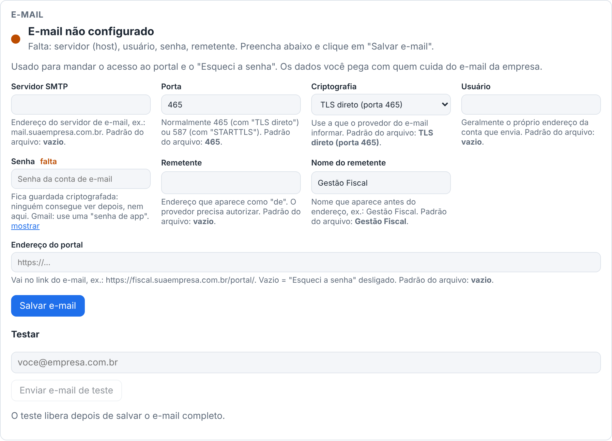

O e-mail não chegou
Vale para o acesso ao portal, o acesso ao painel e o "Esqueci a senha".
search Como reconhecer
- A pessoa diz que não recebeu a senha provisória ou o link de "Esqueci a senha".
- No painel aparece "O envio de e-mail ainda não foi configurado".
storefront O que o cliente faz
- Olhe a caixa de spam ou lixo eletrônico. Procure pelo assunto "Criar uma senha nova no portal" ou pelo nome do remetente.
- Espere alguns minutos: quem envia é o worker, pela fila.
- O link de "Esqueci a senha" vale 1 hora. Se venceu, peça outro.
- Se mesmo assim não chegar, peça ao responsável da sua empresa uma Nova senha (tela Usuários) ou fale com o suporte.
support_agent O que o suporte faz
- Abra Sistema › E-mail. Se aparece E-mail não configurado, preencha o que falta e clique em Salvar e-mail.
- Mande um e-mail de teste para você mesmo. Se der erro, a mensagem diz o motivo (senha errada, porta errada...).
- Confira se o worker está ligado: sem ele, os e-mails ficam na fila.
- Enquanto isso, na ficha da empresa use Copiar dados de acesso e mande pelo WhatsApp.

Erros comuns ao configurar
| Situação | O que fazer |
|---|---|
| Falha de login no servidor de e-mail. | Confira usuário e senha. No Gmail, use uma "senha de app". |
| Não conecta. | Porta 465 combina com "TLS direto"; porta 587 com "STARTTLS". Confira com o provedor. |
| O e-mail cai sempre no spam. | Use um remetente do mesmo domínio da conta e peça a quem cuida do domínio para configurar SPF/DKIM. |
← Voltar para a Central de Ajuda
Última revisão: 08/11/2026